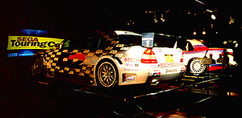

セガ ツーリングカーチャンピオンシップ
スペシャルステージin東京ジョイポリス

|
すっかり定番スポットとしておなじみの東京ジョイポリス３Ｆに、ＳＴＣスペシャルがいきなり登場！スープラＧＴ、アルファロメオ１５５Ｔｉ、メルセデスベンツＣクラスの３台構成です。 なにかと盛り上がっているお台場ですが、ぜひデートのシメはＳＴＣスペシャルでひと汗（冷や汗？）かいてください！ |
| 定員 | ２名 |
| プレイ時間 | ３〜８分 |
| 対象 | 身長１３０ｃｍ以上 |
| 料金 | １人５００円／２人１０００円 |
ただいまのトップタイム（自己申告）
ＧＧＩ ４’０９”９０９
（３周×３ステージ）
TOYOTA SUPRA / MT
このタイムより速い人はソフト５研までメールで！

|

|